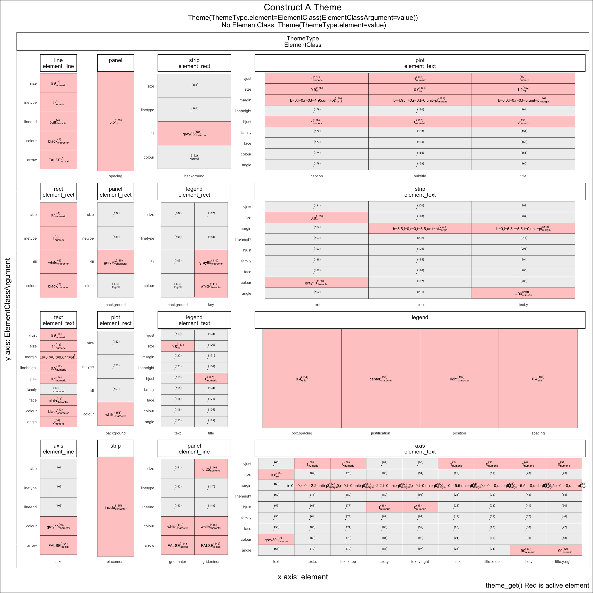

Data Driven Cheatsheets
Jonathan Sidi
January 15, 2017
Cheatsheets are currently built and used exclusivley as a teaching tool. We want to try and change this and produce a cheat sheet that gives a roadmap to build a known product, but also is built as a function so users can input data into it to make the cheatsheet more personalized. This gives a versalility of a consistent format that people can share with each other, but has the added value of conveying a message through data driven visual changes.
Example
ggedit:::plot.theme()
The ggplot2 theme object is an amazing object you can specify nearly any part of the plot that is not conditonal on the data. What sets the theme object apart is that its structure is consistent, but the values in it change. In addition to change a theme it is a single function that too has a consistent call. The reoccuring challenge for users is to remember all the options that can be used in the theme call (there are approximately 220 unique options to calibrate at last count) or bookmark the help page for the theme and remember how you deciphered it last time.

This becomes a problem to pass all the information of the theme to someone who does not know what the values are set in your theme and attach instructions on it to let them recreate it without needing to open any web pages.
In writing the library ggedit we tried to make it easy to edit your theme so you don’t have to know too much about ggplots to make a large number of changes at once, for a quick clip see here. We had to make it easy to track those changes for people who are not versed in R, and plot.theme() was the outcome.
In short think of the theme as a lot of small images that are combined to create a single portrait:
Photo mosaic by: yoniceedee @ Mosaically
Converting a theme call to a single image
theme(themeType.element=elementClass(elementClassArgument=value))- theme(): ggplot2 theme function
- themeType: general part of the theme
- line,rect, text, axis,legend, panel, strip, plot
- element: element if a themeType
- ie themeType=axis and element=ticks is written as axis.ticks
- elementClass: each element is classified to an element_class() which is function that controls characteristics for the class
- eg element_line(size,linetype,lineend,colour,arrow)
- elementClassArgument: characteristic of an element which are arguments of an element_class function
- value: the value given to an elementClassArgument
There are themeType.elements that are not classified in a specific class thus are given values directly, like legend.
theme(themeType.element=value)To tie this all together we can create this single template that can be replicated for any element in the theme object. To add more information to the ouput the class of the value given to an elementClassArgument (or a themeType.element) and the index to uniquely identify the element.
library(ggedit)
Grouping templates
plot(theme_get(),themePart = 'legend',fnt=17,plotFrame = F)
We add some colour to distinguish which elements are set to NULL (grey) and which ones have values (red).
As an example this is how to read the output
theme(legend.key=element_rect(fill='grey95',colour='white'),
legend.text=element_text(size=rel(0.8)),
legend.title=element_text(hjust=0),
legend.box.spacing=unit(0.4,'cm'),
legend.justification='center',
legend.position='right',
legend.spacing=unit(0.4,'cm'))Visualize the whole theme
plot(theme_get(),plotFrame = F)
Create the cheatsheet
Toggling the plotFrame argument to the plot call will nest the plots into a generic cheatsheet layout that does a better job of finding the best width for each box and supplies instructions on the border of how to read the output with a caption on the bottom which theme was used.
plot(theme_get(),plotFrame = T,fnt = 10)
Compare themes
Finally there is an option to compare themes. The same layout will be given but the color coding will change, where a blue color will indicate an update from the benchmark theme.
library(ggthemes)
plot(obj=theme_economist(),obj2 = theme_bw(),fnt = 10)
When collaborating with many people and large changes are made to the theme this lets you have a single language everyone can understand for quick referencing and hopefully problem solving.
Jonathan Sidi joined Metrum Researcg Group in 2016 after working for several years on problems in applied statistics, financial stress testing and economic forecasting in both industrial and academic settings.
To learn more about additional open-source software packages developed by Metrum Research Group please visit the Metrum website.
Contact: For questions and comments, feel free to email me at: yonis@metrumrg.com or open an issue in github.